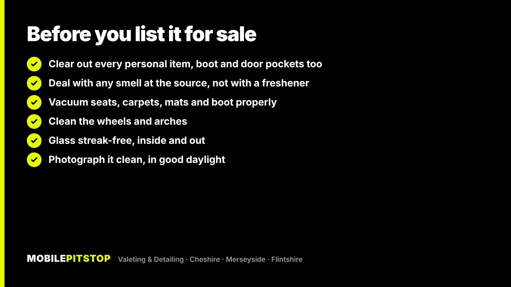
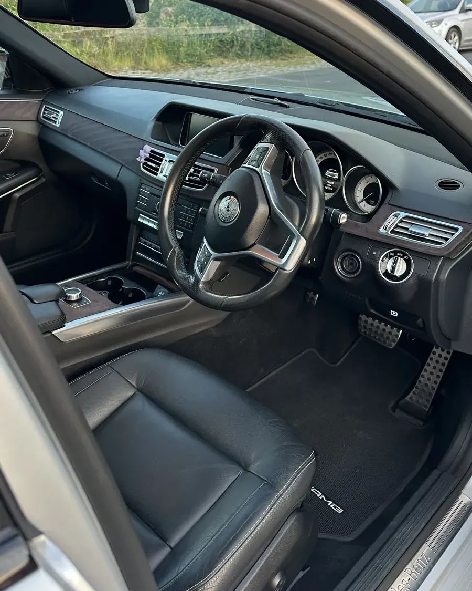
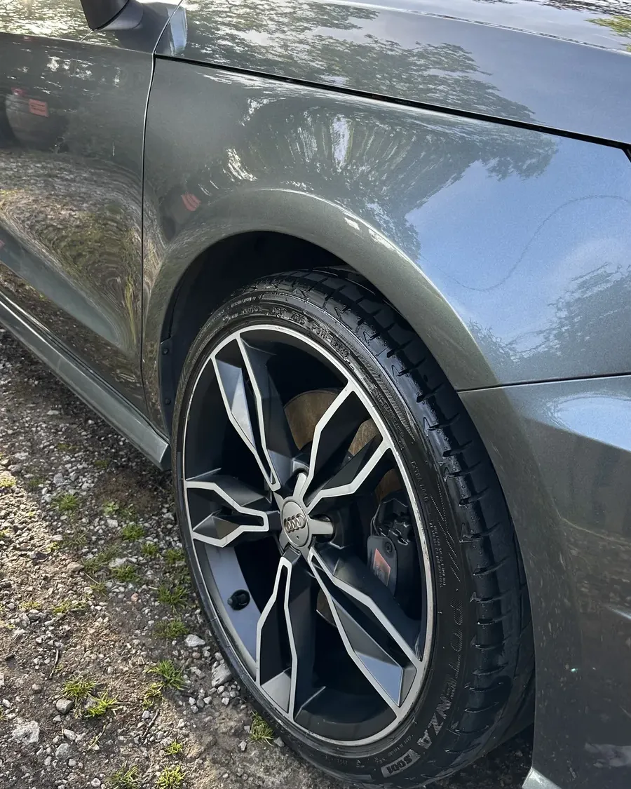

A proper clean is one of the few things worth spending money on before you sell a car. Buyers judge a used car in the first minute, from the listing photos and from what they smell and touch when they open the door. A car that's clean inside and out looks looked-after, and that's what makes people take it seriously.
What's usually not worth it is anything aimed at the long term: a ceramic coating, multi-stage paint correction or paint protection film all protect the paint for the next owner, not for you.
Below is what buyers notice first, what you can do yourself, where it's worth paying for help, and how we prepare a car for sale on our jobs.
What buyers notice first
Most buyers aren't experts, so they read a car's history from the things they can see, smell and touch. These are the ones that count:
The smell. Smoke, damp, dogs or old food are noticed the moment the door opens, and they make people wonder what else has been neglected.
The driver's seat and steering wheel. They're where the buyer sits first, and grime on a wheel or a stained seat base reads as a hard-used car.
Footwells, mats and the boot. Grit, crumbs and hair in the carpets are easy to spot when someone leans in, and the boot always gets opened.
Wheels. Brown, dusty alloys make the whole car look tired in photos, even if the paint is clean.
Glass. A hazy windscreen shows up in every interior photo and is the first thing a buyer sees from the driver's seat.
The paint in the photos. Clean paint reflects light. Dirty or road-filmed paint looks flat, and the camera exaggerates it.
What you can do yourself
If the car has been kept reasonably clean, you can get a long way on your own driveway. Work through it in this order so you're not dropping dust onto parts you've already cleaned.
Empty it completely. Door pockets, glovebox, under the seats, the boot and the spare wheel well. Personal clutter makes a car feel lived-in rather than for sale.
Vacuum from the top down. Seats first, then carpets and mats, then the boot. Slide the seats fully forward and back to reach the rails, where most of the grit hides.
Wipe the surfaces you touch. Steering wheel, gear selector, door handles and switches, using a cleaner made for car interiors. Avoid greasy dressings, which leave a shine buyers don't trust and a slippery wheel.
Clean the glass inside and out. Use two microfibre cloths, one to clean and one to buff dry, so you don't leave smears.
Wash the outside safely. Wheels first, with their own bucket and brushes, then the paint with a two-bucket wash. Our guide to cleaning brake dust off alloys covers the wheels in detail.

Where DIY stops working
A vacuum and a wipe-down won't shift stains that have soaked into seat foam, ground-in dirt in carpets, or a smell that lives in the fabric and vents. Air fresheners are the classic mistake here: a buyer can smell the freshener and what it's covering, which is worse than either on its own.
The aim is to show the car at its best for the least sensible spend. A rough guide, matched to the car's condition:
If the car…
It probably needs
Is already well kept and just needs freshening up
A good DIY clean may be enough
Has a tired interior: grit, crumbs, hair, sticky surfaces
Interior Deep Clean
Hasn't been properly cleaned inside or out for months
In & Out Deep Clean
Smells of smoke, pets, milk or damp
Odour removal at the source
Has dull, hazy paint that looks flat in photos
Possibly a single-stage machine polish
A few things rarely pay their way right before a sale:
Ceramic coatings and paint protection film. They're long-term protection, so the next owner gets most of the benefit, not you.
Multi-stage paint correction. Worth it on paint you're keeping, not usually on a car that's going in a fortnight.
Trying to clean away damage. Deep scratches through the clear coat, dents and kerbed wheels need a body shop or wheel refurbisher, not a valet. Be upfront with buyers about them instead.
A single-stage polish sits in between. It removes most light swirls and water marks, which can make a real difference in photos on dark paint, but it's only worth it if the paint actually looks dull. If you're not sure, send us a few photos in daylight and we'll tell you straight which service the car needs, including when a cheaper one will do.
How we prepare a car for sale
For most cars going up for sale, the In & Out Deep Clean is the right job, because it resets the whole car rather than one half of it. On our jobs that means:
Compressed air through the seat rails, joins and vents before the vacuum, because that's where grit and crumbs hide.
A deep vacuum of seats, carpets, mats, the boot and the edges.
Steam, shampoo and extraction of the seats, carpets, mats and boot, with seat stain treatment included, so dirt is pulled out of the fabric rather than pushed around it.
Steam cleaning of the contact areas and the steering wheel sanitised: the parts a buyer touches first.
Plastics scrubbed to a natural satin finish, not greased, and the interior glass cleaned.
Outside: a snow foam pre-wash and two-bucket hand wash, wheels, tyres and arches deep cleaned, chemical decontamination of tar, iron fallout and road film, door shuts and trims detailed, and a protection wax on the paint.

A Mercedes E-Class interior after cleaning: seat, wheel, dash and mats, the first things a buyer sees.
If only the inside needs work, an Interior Deep Clean covers it. If there's a smell that keeps coming back, our odour removal treats the source, including the ventilation, rather than covering it up.
We're mobile, so we come to your home or workplace, roughly within 20 miles of Ellesmere Port. That also means the car is clean where it's parked, ready for photos the same day.
When to book
Book the clean before you take the listing photos, not after. Ideally it's a few days before the car goes online, so the photos, the first viewing and the handover all show the car at the same standard.
Photographing the car for your listing
All that work is wasted if the photos don't show it. A few habits make a big difference:
Shoot in daylight, out of harsh sun. A bright, overcast day gives even light without deep shadows or glare.
Pick a plain background. An empty car park or a quiet road looks better than bins, other cars or your house.
Cover every angle. Front and rear three-quarters, both sides, the wheels, the driver's seat, the rear seats, the boot and the dashboard.
Be honest about faults. A clear photo of a scuff builds more trust than a buyer finding it on the day.

Clean paint reflects light. That gloss, and clean wheels, is what makes a car stand out in listing photos.